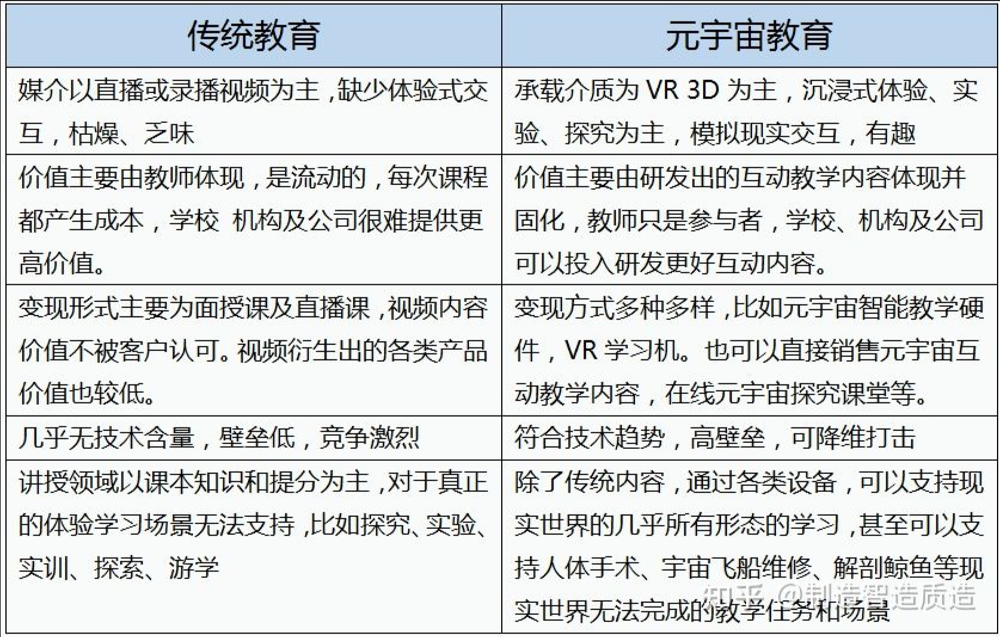
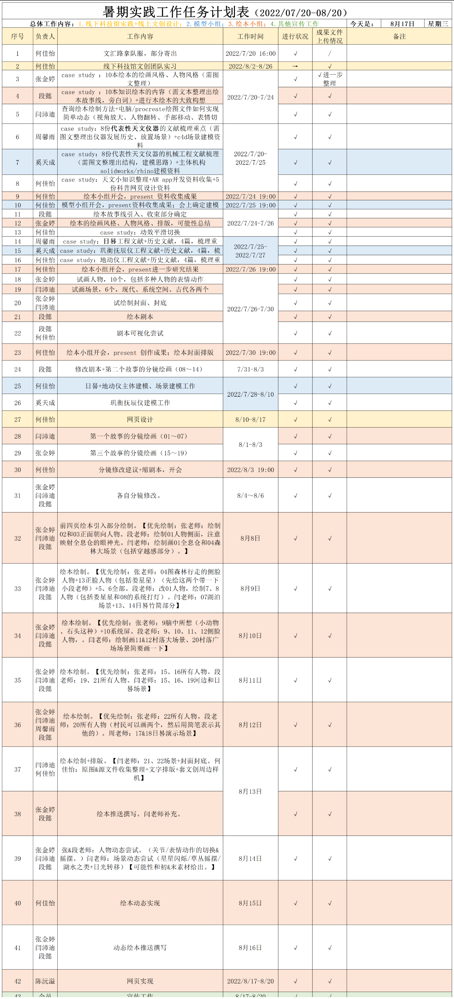
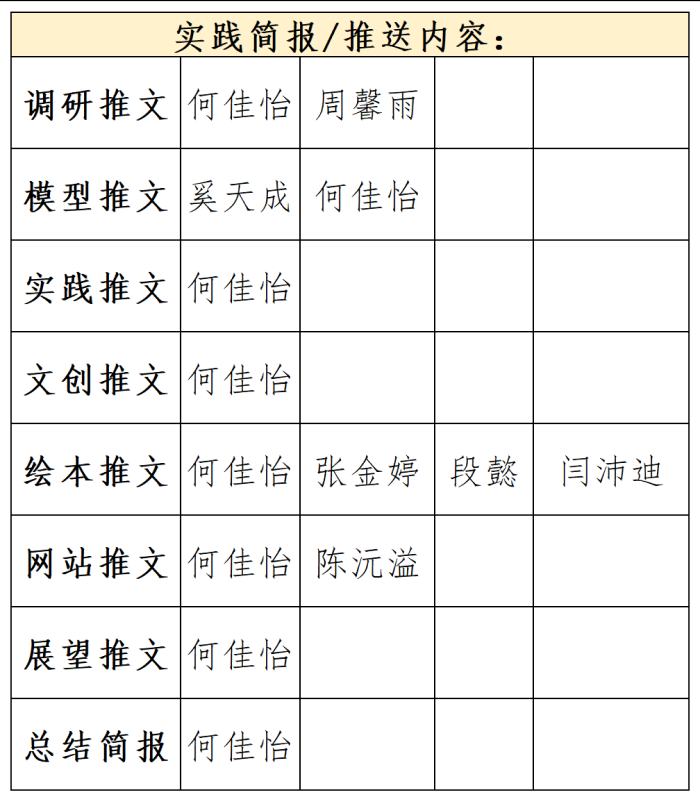

深耕传统，复原天文之美
着眼未来，推动数字教育
by DDesignees
以好奇驱动，将讯息传递
Think big, starts small.
网页定位
本网页为东华大学机械工程学院《深耕传统，复原天文之美；着眼未来，推动数字教育》暑期实践项目的成果之一，也是所有成果的总结，服务于结项汇报。
但我们希望其将不停留于成果汇报的功能，而同时具有大众科普教育的功能，涉及古机械复原、天文、数字化转型技术族群知识。这是项目负责人在立项时的期待和探索的方向。
项目介绍
本项目是「锤炼城市“绣花针”」主题下的「人民城市建设」分支，更具体地说，是「文化建设」下的「科教建设」。
我们探索的主题是：元宇宙教育如何落地？基于此，我们对中国古代天文观测机械进行了数字化建模复原与再创造，力图服务于科普教育。
选题关键词有：古机械复原、馆藏数字化、天文历史。
项目细化思路为：以科普教育工作的数字化转型为探索方向；以我们的所学习的工业设计下的古机械复原为细分学科；以上海新添地标——上海天文馆为灵感，选择了天文观测机械为内容容器，开展了项目。
更进一步的，我们将天文观测机械锁定在：通过观测日影判断时间的赤道式日晷、感知远处地震信号的侯风地动仪，以及结合了当时中国浑天浑象与西方历法之大乘的玑衡抚辰仪。
背景信息
深耕传统——古机械复原与文化自信
“文化自信是一个国家、一个民族发展中最基本、最深沉、最持久的力量。向上向善的文化是一个国家、一个民族休戚与共、血脉相连的重要纽带。文化是一个国家、一个民族的灵魂。文化兴国运兴，文化强民族强。”
古代机械的复原的原则是：保证尺寸、制造工艺符合史实。 我们可以参考的资料来自于文物的记载和出土，是静态的、角度较少的、有遗缺的。因此，我们认为，古机械复原的工作，不仅仅在于基于文本的还原，还在于用现代科学的思维，重新思考古机械的机械功能的实现原理，并在科技驱动下，赋予古机械、古文物新的载体。
古代机械的复原的意义，在于古代匠人智慧、中华机械历史、中华科技文化的重现。中华优秀传统文化滋养着中华民族在新的历史条件下的新创造、新发展，给我们的文化自信打下了最深厚的历史根基。
着眼未来——博物馆联手建构元宇宙馆藏
“元宇宙在对现实世界的虚拟化、数字化过程中，需要大量来源于实体世界的物质标本和精神世界的文化元素，以建构与真实社会体系融合的数字生活空间。博物馆的宗旨和理念与元宇宙是相通的，博物馆的未来和使命与元宇宙是相融的。”
——《关于博物馆积极参与建构元宇宙的倡议》
数字化馆藏无疑是新一轮科技革命和产业变革新机遇的战略方向。
NFT中国——2022中国数字藏品最具影响力品牌
NFT交易平台，如NFT中国，是NFT领域的基础设施。
涵盖内容：用户可以在NFT中国购买和出售加密艺术品、游戏道具、虚拟地产、域名、金融产品等各种NFT商品。支持ERC721和ERC1155资产。涵盖NFT艺人工作室、元宇宙NFT拍卖行、元宇宙NFT画廊等多种业务。NFT中国的目标远不止于做一个交易平台，而是布局区块链+内容+社区的元宇宙迁徙通道，打造一个完整的UGC内容生态。聚集了全球最优秀的数字艺术家和数字藏品。采取NFT作品审核上架制度，保证了NFT作品的质量，目前作品主要集中文创类，包括艺术品、音乐、运动、娱乐、游戏、明星IP等。利用交易平台赋能艺术家，提供版权保护、流量扶持、市场数据图谱、交易结算等一站式基础设施服务，帮助合作艺术家们增加作品曝光、提高作品流通性。
交易方式：NFT中国在用户体验上达到了全球领先的水平，迎合国内用户的消费习惯的技术平台，采用人民币支付体系，可直接采用人民币购买数字艺术品，卖家也可以直接通过人民币结算。这样的方式既降低了用户的操作难度，又规避了使用虚拟货币、数字钱包的法律风险。NFT中国是国内唯一一个采用以太坊公链的交易平台，是国内首个采取去中心化储存方案交易平台。
艺术家创作：创作者可以使用NFT中国的NFT铸造工具在区块链上创建项目，无需代码就可以免费制作NFT和藏品集。
本节内容来自知乎专栏
着眼未来——元宇宙是未来教育大趋势
“对于现阶段的教育来说，最大的目标就是培养学生的学习兴趣，让不爱学习的学生能够主动学习，让无法接受高等教育的学生也有机会学习。将教育结合元宇宙，一方面使孩子在学习途中通过更真实的场景吸引他们的学习热情，使学习更加有互动性、沉浸感和获得感，另一方面针对一些边缘的缺乏权威教材和科学培训体系的地区，通过更低成本的在线学习，获得与大城市一样的教育资源，解决教育分布不均匀的问题，打造全民面向数字新时代的教育环境。”
——《现代教育技术》 蔡苏 焦新月 宋伯钧
元宇宙+教育的优势
本图片来自知乎专栏
创作成果
可以在本网页的导航栏看到，我们的创作成果主要分为3个板块：模型、绘本、文创产品。我们在22年7月末开始了对项目的调查、创作和反复修改。最终的产出是我们全力以赴的结果。
调研实践
项目负责人在8月1日至8月26日在上海科技馆管理公司进行了实习，通过参与文创团队进行前期策划、资料收集、方案讨论、和后期实现的工作，并将本项目的调研方案和创作成果与科技馆文创团队进行了沟通交流。同时，在每日午休时间参观场馆，观察少年儿童和家长游客对展览和文创商品的关注点，对于通用设计、文创设计有了更多的洞察。
过程探索
我们在项目开展初期进行了很多资料收集工作，并有序安排了每项工作的时间表，将在工作一览中着重体现。
、在线上协作方面，项目中期的沟通是在腾讯会议上进行的，保持着一天一会的频率；项目收尾阶段，则更多地转向了在群聊私聊传递图片、修改要求、改图和源文件。
在绘本小组工作中，我们在趣味性和教育性间寻找平衡，用故事作为载体，进行科普教育的探索和尝试。我们了解到，绘本市场消费者更偏好有主人公角色的故事内容，因此我们创造了宋小天这个角色，串联故事线。我们根据本次实践选择的三个古代天文观测仪器，撰写了文字剧本，并绘制了分镜，由于本次实践时间有限，我们选择了日晷的故事绘制了第一集绘本。
在模型小组工作中，我们本来打算做一个集大成于一身的水利仪象台，但在市面上，我们看到三个博物馆已有水利仪象台的相关NFT商品，因此，我们决定换一个思路，将原有的思路拆分开来，每个模型只专注一个功能部分。在资料收集阶段，确定了我们将进行建模的仪器，有：赤道式日晷、侯风地动仪和玑衡抚辰仪。
在调研实践工作中，我们通过问卷，初步了解了广泛的消费者想法。通过对行业报告的阅读研究，进一步了解了元宇宙、NFT艺术和交易、数字藏品的概念和市场。
其他工作，如文创产品、网页建设，都是以上这些主要工作的继承和拓展。
项目展望
绘本项目：留下了两个未详细绘制的故事剧本，组员可以在兴趣下进一步绘制。
云协作：本次使用的团队文档协作和进度追踪工具为金山文档、百度网盘和微信群聊传递，对于一些绘本、模型源文件，并不能做到实时上云，将进一步探索云协作方式。
线下科技馆实习：在本次项目实践中，发现了合作机会点。我们和科技馆文创团队交流了企业文创工作与高校设计学生/工作坊合作的可能性，这对双方都富有积极意义，是一个双赢局面，将进一步进行讨论和方案企划的交流。
工作一览
实践工作
宣传工作
DDesignees